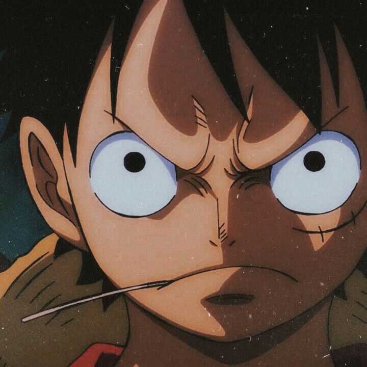
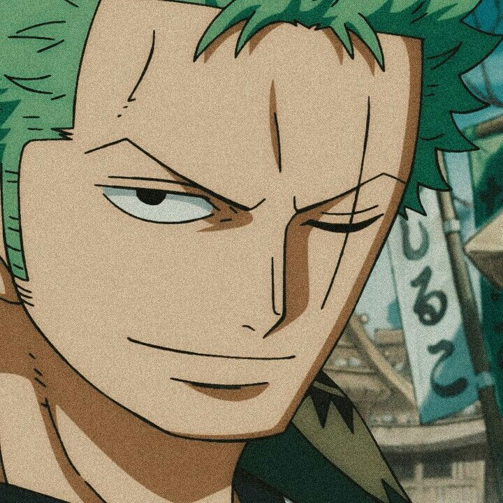
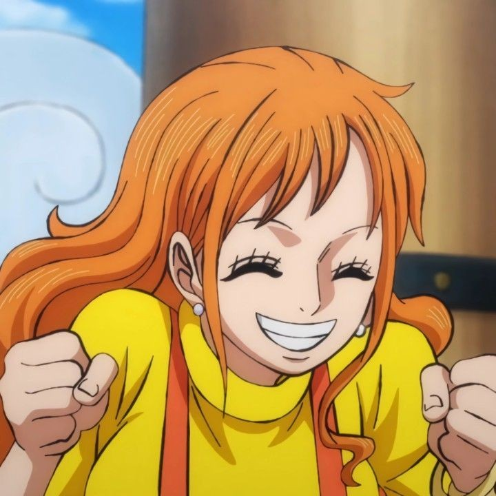
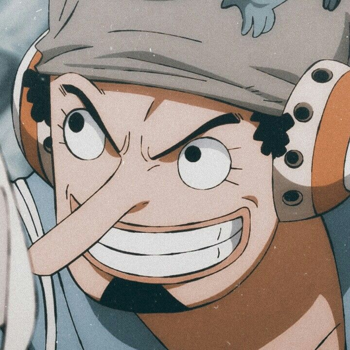
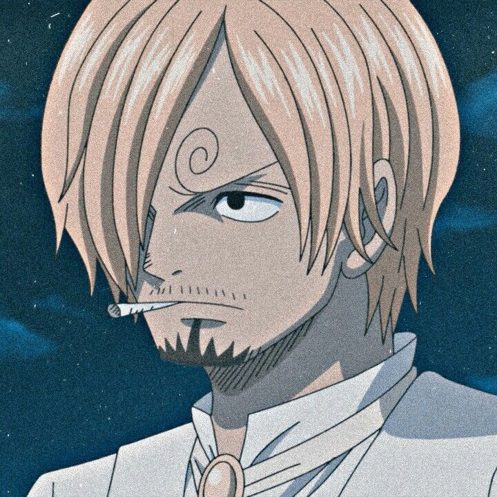
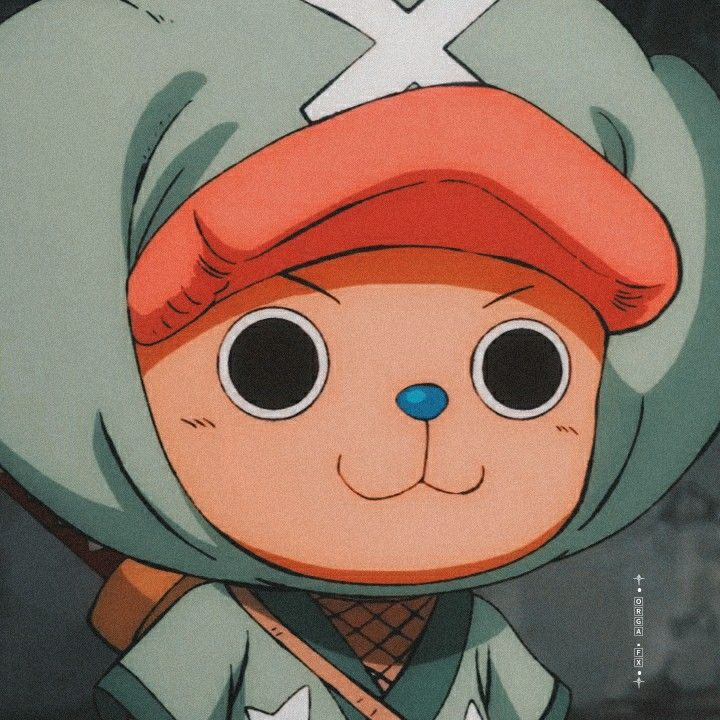
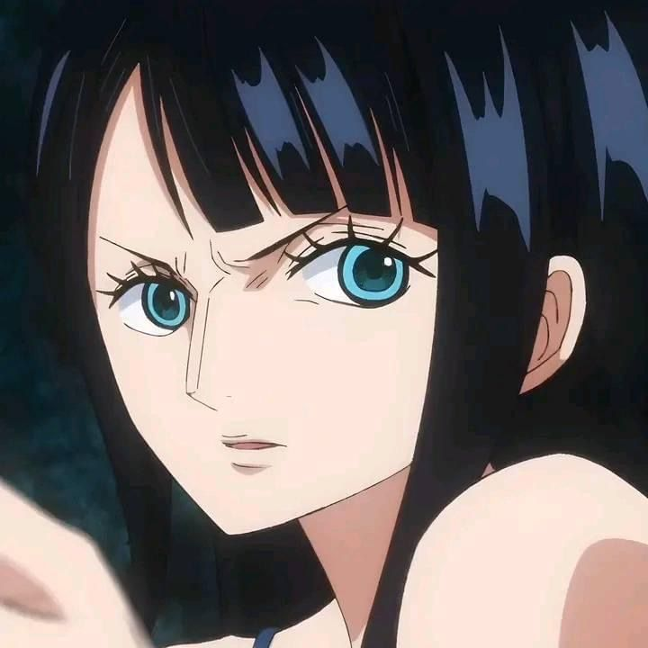
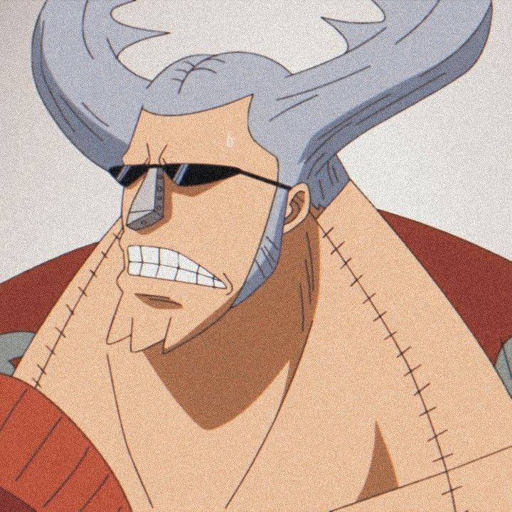
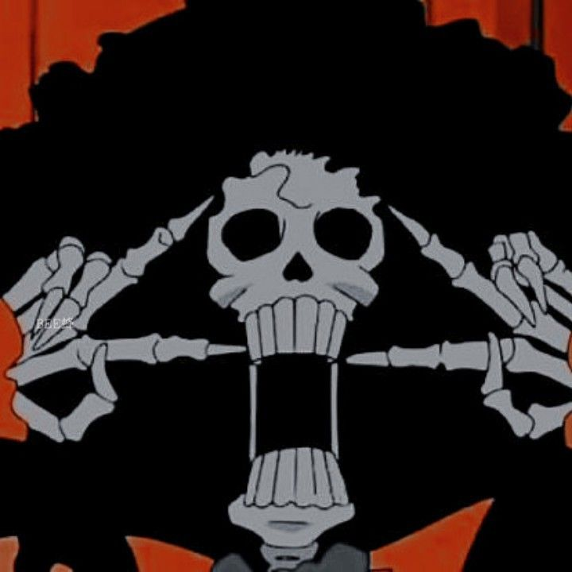
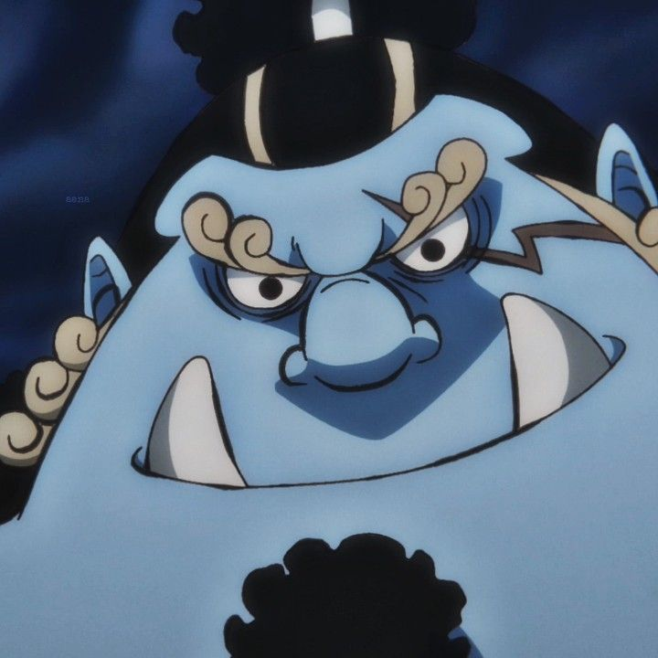

Os Chapéus de Palha
Uma das tripulações mais conhecidas atualmente, os Chapéus de Palha navegam pelos mares da Grand Line em busca do grande tesouro One Piece, almejado pelo capitão Monkey D. Luffy!
Monkey D. Luffy
O capitão do navio. Um jovem animado, brincalhão e cheio de energia. Luffy tem o sonho de encontrar o lendário tesouro One Piece e de ser o homem mais livre dos mares. Sua família é um tanto quanto estranha, sendo seu pai (Monkey D. Dragon) o líder do Exército Revolucionário e seu avô (Monkey D. Garp) o vice-almirante da Marinha.
Roronoa Zoro
Foi o primeiro membro da tripulação que Luffy recrutou. É um grande espadachim, mas também um bebum que não tem noção nenhuma de direção. Ele também ama tirar uma sonequinha. Seu sonho é se tornar o melhor espadachim do mundo, pois fez uma promessa à uma falecida amiga de infância chamada Kuina.
Nami
Uma jovem viciada em dinheiro devido traumas de infância e uma ótima navegadora. Nami é uma das líderes que toma conta da tripulação quando Luffy não está ou não pode. É, também, muito admirada por Sanji, que tenta sempre deixá-la apaixonada por ele. Seu sonho é desenhar um mapa múndi, provando que já passou por todos os mares.
Usopp
Usopp é o atirador mentiroso da equipe. Parece que prevê o futuro com suas mentiras e possui projéteis estranhos com propriedades de plantas. Também é um grande inventor e, enquanto Franky não estava no time, quem cuidava e consertava o navio era ele. Usopp sonha em morrer de forma digna e ser reconhecido como um grande guerreiro.
Vinsmoke Sanji
Sanji é um cozinheiro muito gentil com as mulheres e com os que tem fome. Tem uma força sobrehumana nos pés e não luta com as mãos, já que não pode sujá-las em vão. Tem o sonho de encontrar o All Blue, um mar onde os peixes de todos os outros mares se encontram. Esse também é o sonho de seu chef Zeff, que cuidou dele durante toda a infância. Foi abandonado pela família e quase morrera de fome por ficar abandonado em uma ilha por quase cem dias.
Tony Tony Chopper
É uma rena que comeu a Hito Hito no Mi, ganhando a habilidade de se transformar em humano e pensar e falar como um. Ele é o médico da tripulação e seu sonho é descobrir um remédio que cure todas as doenças e feridas. Foi criado em uma ilha de inverno pelo Dr. Hiriluk, o único que aceitou Chopper e não teve medo dele e, após sua morte, pela Dra. Kureha.
Nico Robin
Robin foi uma criança procurada pelo Governo Mundial desde os oito anos por ser uma arqueóloga e querer saber sobre o Século Perdido, uma época totalmente oculta da história. Sua terra natal, Ohara, a ilha dos arqueólogos, foi destruída, junto de seus professores, pelo mesmo motivo. Robin foi salva pelo almirante Aokiji. Seu sonho é exatamente esse: descobrir o que ocorreu no Século Perdido. Ela comeu a Hana Hana no Mi, e pode criar clones de seu corpo em qualquer lugar com qualquer quantidade.
Franky
É um ciborgue cheio de armas muito animado e brincalhão que ama refri e, também, um carpinteiro. Franky foi o responsável pela construção do Thousand Sunny (navio atual dos Chapéus de Palha após a morte de Going Merry) e sonha que este navio possa dar uma volta no mundo, provando seu valor.
Brook
Brook é um esqueleto que adora música. Assim como Sanji, tem um certo carinho pelas mulheres e sempre pede a elas que mostrem sua calcinha. Brook comeu a Yomi Yomi no Mi, que o permitiu ressuscitar após ele e toda a sua tripulação morrerem em um ataque pirata. Seu sonho é reecontrar Laboon, a baleia mascote de sua antiga tripulação.
Jinbe
Jinbe é um tritão e um ex-shichibukai que veio da ilha dos homens-peixe. Sua força e conexão com o mar e os animais marítimos são sobrenaturais. Seu sonho é que a paz entre os humanos e os animais do mar possa reinar, sem preconceitos. Ele leva esta vontade de seu antigo capitão Fisher Tiger e da rainha Otohime, que, até morrerem, fizeram de tudo para que pudessem ter paz. Era um grande amigo de Ace, irmão de Luffy, e fez de tudo para protegê-lo em Marineford.
- 
- 
- 
- 
- 
- 
- 
- 
- 
- 